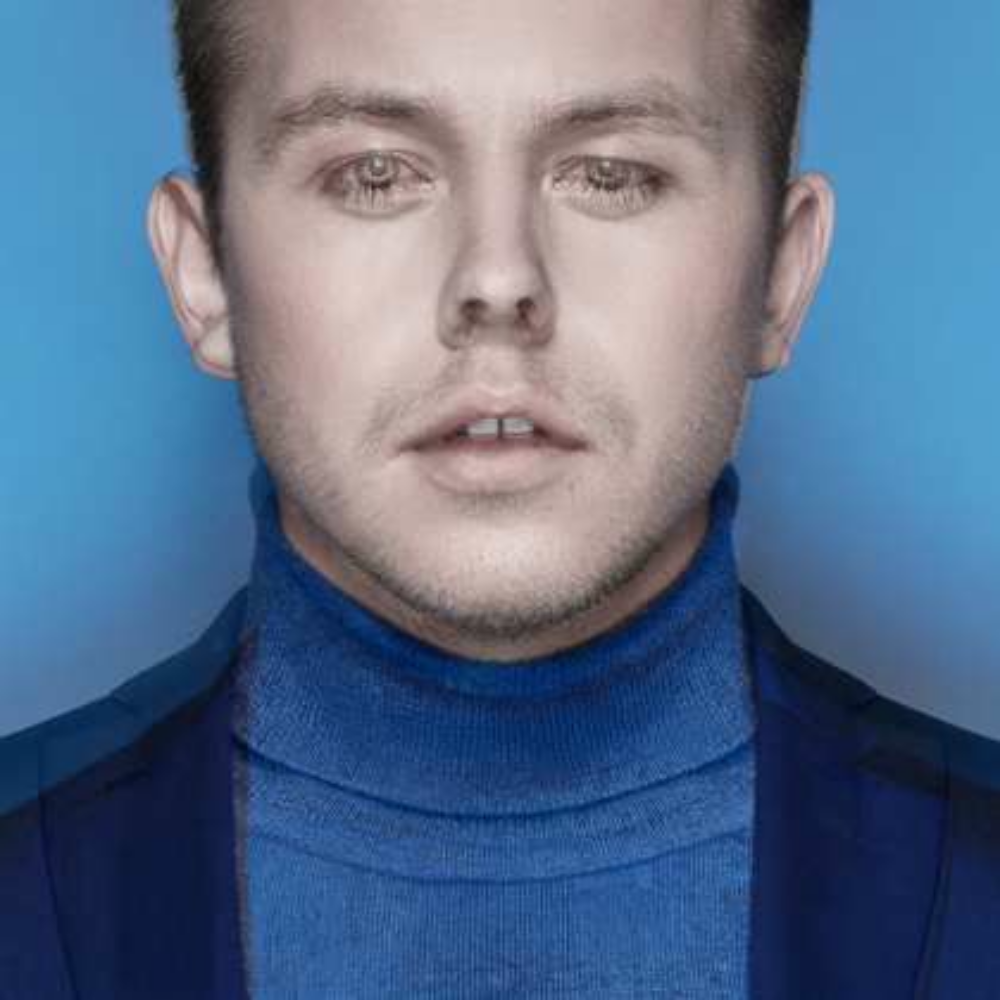

SERGEY

Sergey began releasing music as РЭЙ / RAY. After a break from music and adopting his grandmother’s family name, he continued as ULYANOOW. He now returns under his own first name: SERGEY.
Сергей начал выпускать музыку под именем РЭЙ / RAY. После перерыва и принятия фамилии своей бабушки он продолжил путь как ULYANOOW. Теперь артист возвращается под собственным именем — SERGEY.
The beginning: early recordings and the first album cycle.
Начало: ранние записи и первый альбомный цикл.
The transformation: a new family name and wider creative identity.
Трансформация: новая фамилия и расширенная творческая идентичность.
The return: the artist releasing music as himself.
Возвращение: артист выпускает музыку как он сам.
Physical release: 11 October 2026 — Sergey’s birthday.
Физический релиз: 11 октября 2026 — в день рождения Сергея.
RAY
A vinyl-only continuous DJ-set edition based on the original vocal recordings, newly reinterpreted, mixed and mastered in Los Angeles.
Виниловое издание в формате непрерывного DJ set на основе оригинальных вокальных записей, заново интерпретированное, сведённое и отмастеренное в Лос-Анджелесе.
2026
RAY reconstructs Sergey’s early two-part debut as one continuous vinyl statement. The original vocals remain; the sequencing, transitions, dramaturgy, mix and master are new.
RAY заново собирает ранний двухчастный дебют Сергея в единое виниловое высказывание. Оригинальный вокал сохранён; последовательность, переходы, драматургия, сведение и мастеринг созданы заново.
The record will include an early version of a new single, captured before its final radio-ready production. This exact version will not be included in the final single release and is planned to remain exclusive to this physical edition.
На пластинку войдёт ранняя версия нового сингла, зафиксированная до финального радио-продакшна. Именно эта версия не войдёт в итоговый релиз сингла и планируется как эксклюзив физического издания.